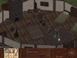

Prodigy
| Max 1 Skill Points, A Scholarship to the Academy |
Background/Summary
Glauke wants to enroll the gifted river child Ansel into the Academy. Ansel's mother Rokika has other plans in mind.
Player's Introduction
Speak with Ansel, Glauke or Rokika.
Objectives
Get Ansel to enroll into the Academy.
Completing Objectives
|
1) There are 2 ways for the party to get Rokika to allow Ansel to attend the Academy.
|

|
|
1.1) With speech skill of at least 26, the leader can successfully convince Rokika to allow Ansel to attend the Academy.
|
|
1.2) Complete Ansel's chores.
|
|
1.2.1) The first thing Ansel needs to do before he goes anywhere is to fix the well. With a tinker skill of at least 20, someone in the party can fix the well for Ansel.
|
|
1.2.2) Next Ansel must give his sister Lauli her singing lessons. If the leader has music skill of at least 18, they can successfully can give Lauli her lessons +1SP
|
|
1.2.3) Talk once more with Rokika and she will allow Ansel to attend the Academy.
|
2) Return to Glauke with the good news and he will enroll the party into the Academy for free.
|